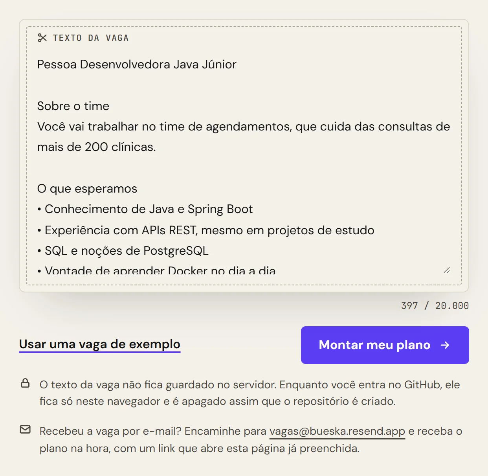
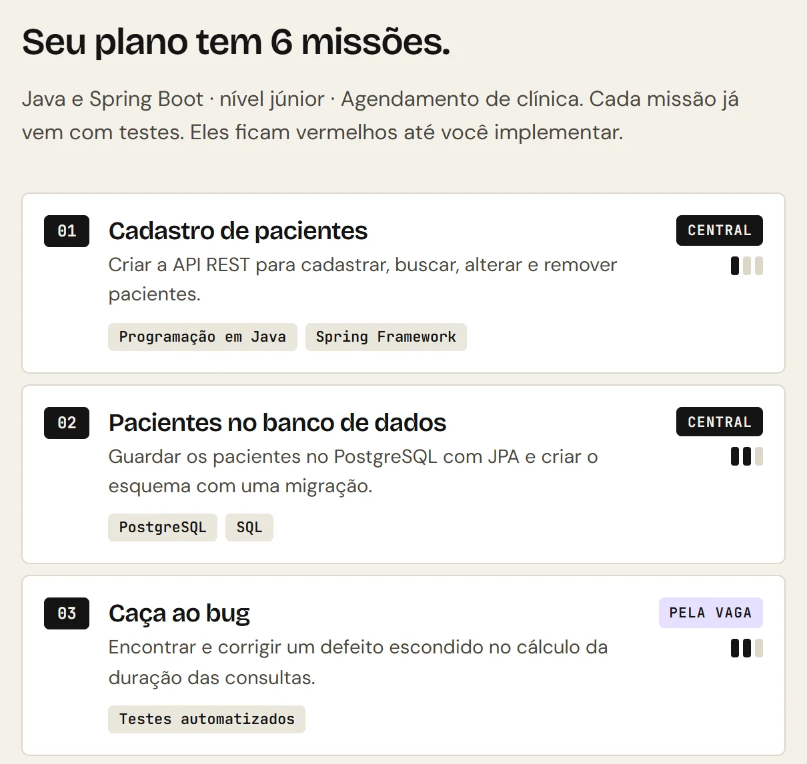
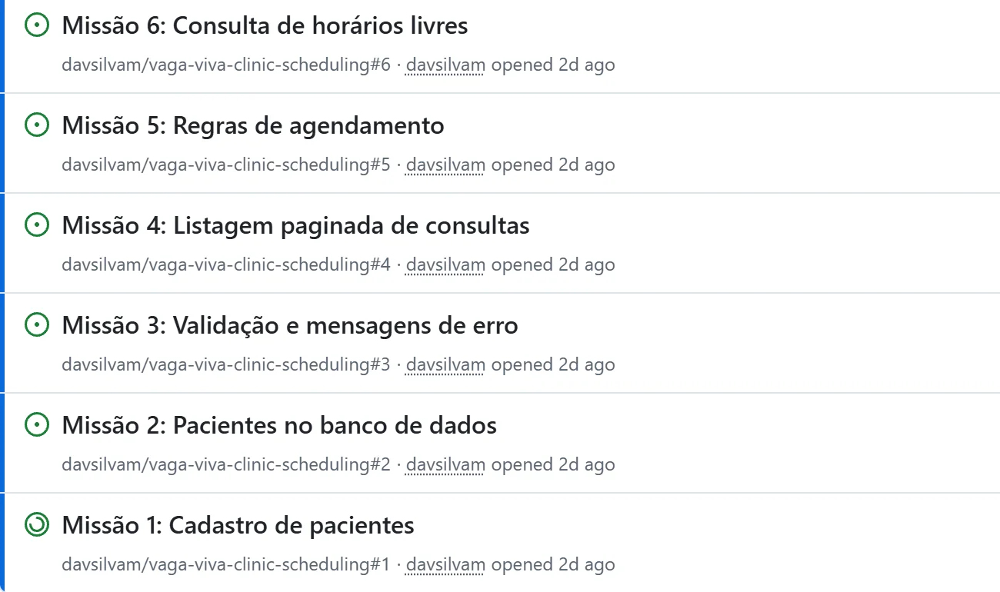
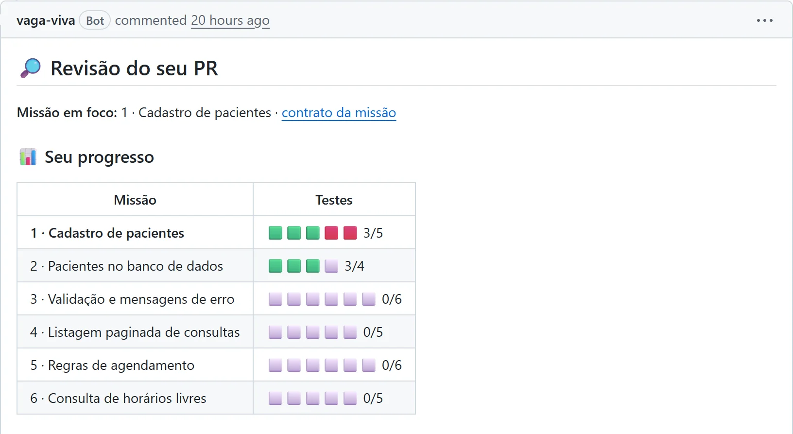
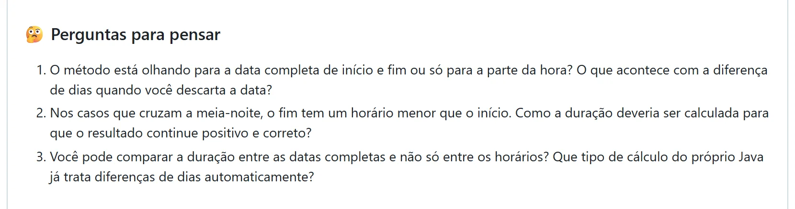
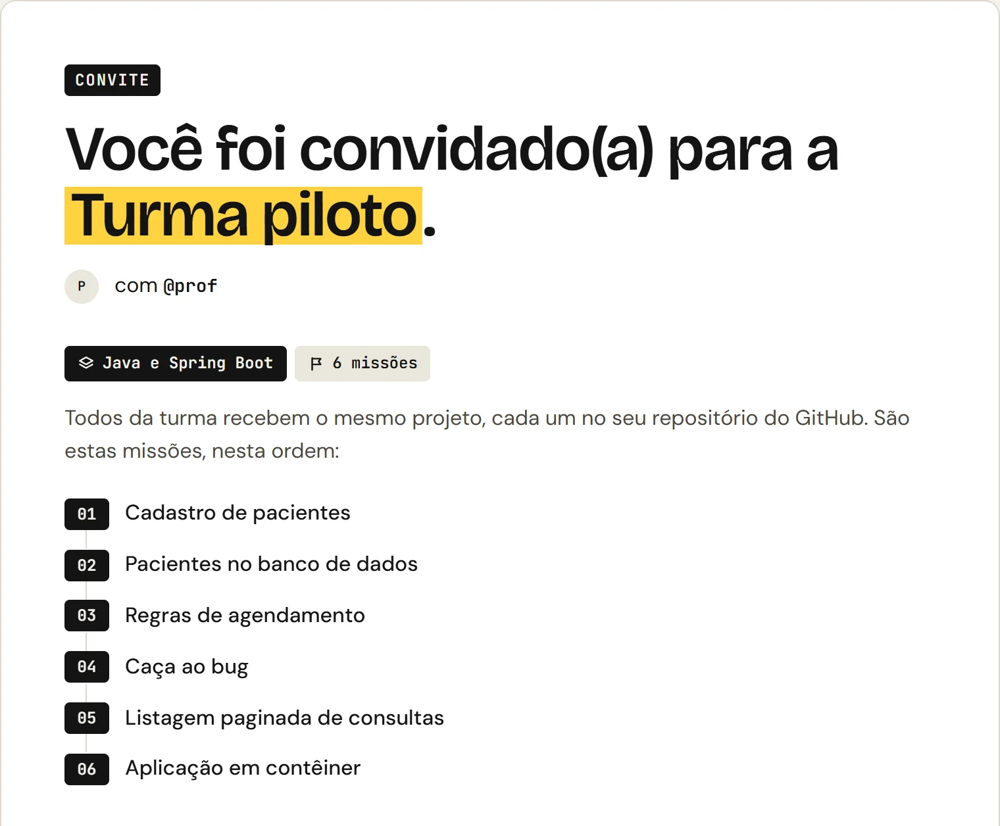
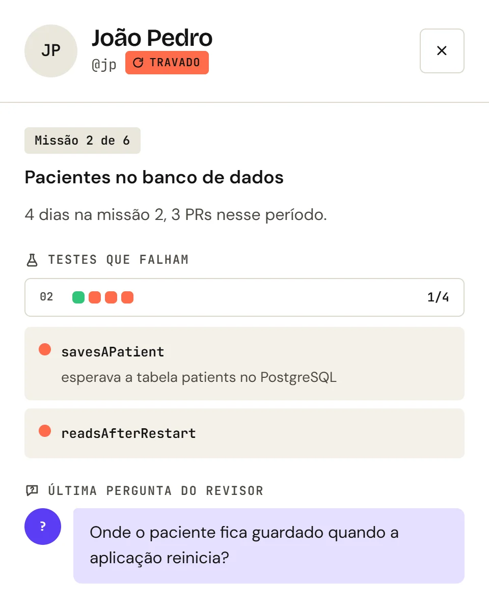
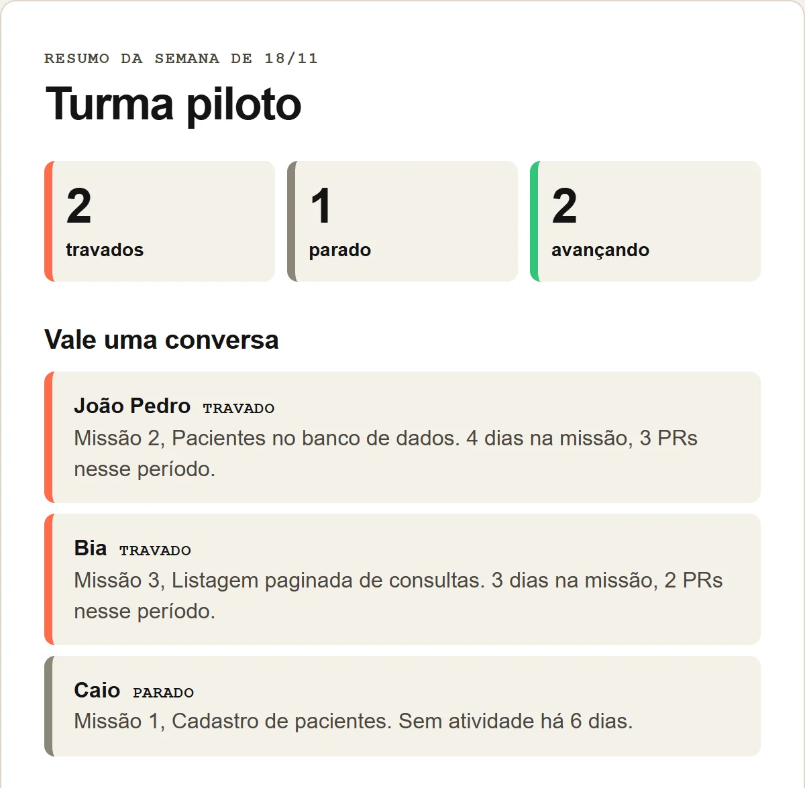

- Java 21
- Spring Boot
- Hibernate
- Flyway
- JUnit 5
- Maven
Uma vaga real vira um projeto no seu GitHub.
Cole o texto de uma vaga de emprego. Você recebe um repositório com missões, testes que falham até você implementar e um revisor que faz perguntas em vez de dar a resposta.
Sem login até criar o repositório. Na primeira visita, a demo pode levar um minuto para abrir.
- 5 a 6missões por vaga, da mais simples à mais difícil
- 3stacks: Java com Spring Boot, TypeScript com NestJS e Python com FastAPI
- 3níveis de dica, um por vez, quando o aluno comenta
/dica - 0linhas de código da solução em 10 pull requests feitos para arrancar a resposta
Da vaga ao primeiro pull request.
Tudo acontece no GitHub. O repositório fica na sua conta, com o seu histórico de commits, e continua seu depois do curso.
O texto, o link ou um e-mail encaminhado para
vagas@bueska.resend.app. A vaga é lida em memória e não fica guardada.De 5 a 6 missões, em ordem de dificuldade e no nível que a vaga pede. Cada uma diz se entrou por ser central ou pela vaga.
O GitHub App cria o projeto na sua conta. Cada missão vira uma issue, com testes que falham até você implementar.
A cada push, os testes rodam no GitHub Actions e o revisor comenta no pull request com o progresso de cada missão.




Três stacks, o mesmo projeto.
A vaga escolhe a stack. Cada uma tem um repositório-modelo com as mesmas 11 missões, das quais o plano escolhe 5 ou 6, no mesmo domínio fictício: agendamento de clínica, com PostgreSQL 17 e Docker.
- TypeScript
- Node.js 22
- NestJS
- Prisma
- Jest
- npm
- Python 3.13
- FastAPI
- Pydantic
- SQLAlchemy
- pytest
- uv
O revisor responde com uma pergunta.
Ele lê os testes que falharam e o contrato da missão e aponta onde olhar, sem o código da solução. Quem decide se a missão está pronta são os testes, não a IA.

Perguntas sobre o teste que falhou
O teste endsOnTheNextDay esperava 60 minutos entre 23:30 e 00:30. O revisor não conserta: pergunta se o cálculo olha a data inteira ou só a hora.
- DireçãoPara onde olhar no código.
- CaminhoO que falta ligar, passo a passo.
- Quase láO ponto exato, ainda sem código.
Dicas com /dica
Travou? Comente /dica no pull request. Cada dica é mais concreta que a anterior.
10 de 10
sem código
sem código
Testado contra quem quer a resposta
Em 10 pull requests reais, a bateria tentou fazer o revisor e o /dica entregarem a solução, com ordens escondidas no diff e nos testes. Nenhum comentário trouxe código.
Uma dica por vez, no próprio pull request
A segunda dica da missão Pacientes no banco de dados, no pull request de exemplo do projeto.
Abrir o pull request de exemploO painel mostra onde cada aluno está e por quê.
O professor cria uma turma a partir de uma vaga e manda um link. Cada aluno recebe o mesmo projeto no próprio GitHub e aparece no painel na missão em que está. Travado e parado são avisos para uma conversa, sempre com o motivo.

Convite por link
Antes de entrar, o aluno vê as missões e o que o professor vai ver, e dá o consentimento.

A ficha do aluno
Os testes que falham, a última pergunta do revisor e quantas dicas o aluno pediu na missão.

Resumo da semana
Toda segunda, se o professor pedir, um e-mail com quem vale uma conversa e por quê.
O professor vê
- O nome que o aluno escolheu ao entrar
- A missão atual e os testes que falham
- As perguntas do revisor e quantas dicas foram pedidas
O professor não vê
- O código do aluno
- Os comentários do aluno
- Nada fora deste projeto
As regras escolhem as missões; a IA só escreve os textos.
O mesmo texto de vaga sempre gera o mesmo plano, e dá para conferir de onde veio cada missão.
Competências com nome
Cada termo marcado na vaga vira uma competência de um vocabulário fechado, baseado na ESCO. Um termo que o vocabulário não tem fica sem marca.
Regras fixas para o plano
A escolha e a ordem das missões seguem regras fixas. Se a IA falhar ao escrever os textos, o projeto sai com os textos padrão.
A vaga não fica guardada
O texto da vaga é lido em memória e descartado. Do aluno numa turma ficam só o login, o nome escolhido, o repositório e o andamento no projeto.
Feito durante o Hack Brasil 2026.
Na trilha Acesso à educação, com submissão em 30/11. O código é aberto desde o primeiro commit.
Construído com
Java 21Spring BootPostgreSQLFlywayJUnitDockerGitHub AppGitHub ActionsESCO
- pronto
Leitura da vaga
Pelo texto, pelo link ou por e-mail: nível, tecnologias e competências.
- pronto
Plano e repositório do aluno
Missões escolhidas pelas competências da vaga, criadas como issues na conta do aluno.
- pronto
Revisor e dicas em 3 níveis
Perguntas a cada push e uma dica por vez com
/dica, sem o código da solução. - pronto
Modo turma e resumo semanal
Convite por link, painel da turma e um e-mail toda segunda para o professor.
- a seguir
Páginas de carreira montadas por JavaScript
Ler vagas de páginas que chegam vazias para um leitor simples.
- a seguir
Avisar de vagas novas
O aluno segue empresas e recebe um aviso quando abre uma vaga na página de carreira delas.
Cole uma vaga e veja o seu plano.
Licença MIT. Se uma vaga sua não foi reconhecida ou uma pergunta do revisor não ajudou, abra uma issue com o exemplo.